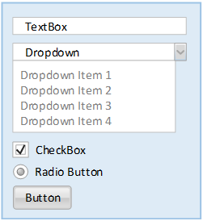
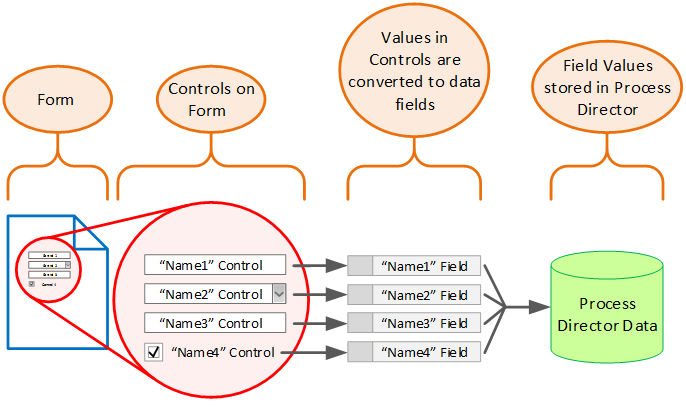
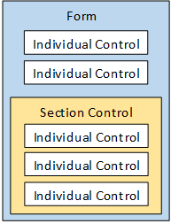
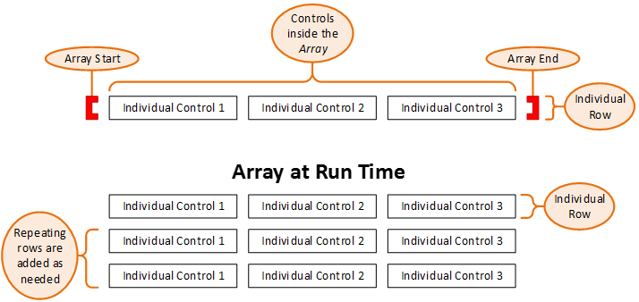
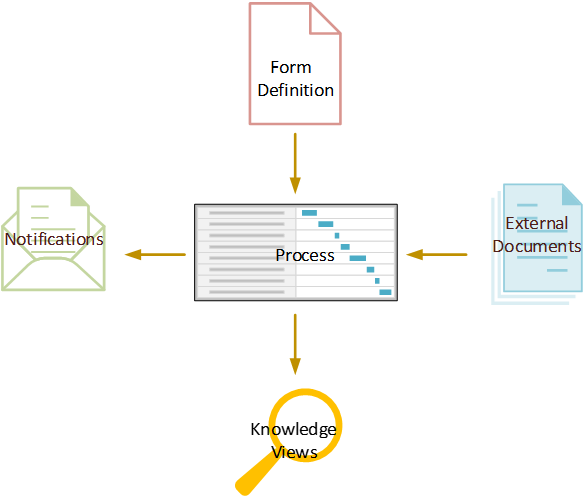

A Process Director application is usually comprised of several Process Director objects.
Business rules define some aspect of a business process and control its operation. Business Rules provide a convenient and useful way to encapsulate complicated or frequently used decisions and make them available for use by any process or Form.
Business rules generally evaluate a condition or set of conditions, and then return a value based on the results of the evaluation. A condition refers to an existing state of some data or activity. Most business rules evaluate data and return a Yes or No answer. Other, more complicated, business rules might evaluate a number of conditions and return a number of different values. For example, let's say that you have a sales representative assigned to a particular state, or number of states. The business rule may evaluate a field that contains the state in which a customer lives and return the name of the appropriate sales representative to a Process Timeline. The Process Timeline can then assign an action to the appropriate sales representative. In this example, the Business Rule evaluates a set of fifty-one different conditions (if we include the District of Columbia). Based on the result of that evaluation, the Business Rule will return the name of the sales representative for the customer's home state.
Forms are electronic forms that serve as the container for the data that is used in your process. Forms can enable users to input information, present information collected from other sources, control what users participate in the process, and much more. Each Form consists of a number of Process Director controls.
There are no hard and fast rules about where you should start when modeling a new process in Process Director. Most people find, however, that when faced with a blank slate and a complex process to implement, the Form is a good place to start. The Form collects the data that you will be using throughout your process, so the exercise of building the Form can be helpful in structuring the process in your mind, and determining where the Form data will be used in the process.
A control is a user interface object, like a button or text box, that enables you to interact with a Form. Controls are central to the operation of the Form, because controls enable users to enter or edit information. Many controls, such as text input fields or checkboxes, may already be familiar to you.
You will use the Online Form Designer to design Forms. Most of the activity of designing a Form consists of placing Process Director controls on a template page. Process Director will convert your design into an appropriate format for viewing in a web browser, while retaining your design and formatting conventions.

When you place a control on a Form page, Process Director also creates a data field that is bound to that control. Process Director uses this data field to store the value that users enter into the control when they submit the Form. As an example, there may be a textbox control named FirstName in a Form. When you enter a name into the control and submit the Form, it is saved to the FirstName field in Process Director. Because the form control and the form field are so tightly bound, we will use the terms ‘form control’ and ‘form field’ interchangeably.

There are also other controls, like the Section control, that determine how information is grouped or displayed by serving as a container for other controls. A Form is essentially a container for controls, and the Section control is, in turn, a container for other controls.

As a general practice, you should use the Section control regularly, as it provides several benefits. First, the Section control organizes your form into logical sections. Second, you can use the section to disable or hide portions of the Form so that users see only the portions of the Form that are relevant to their tasks. In the Sample project, for example, we will use sections to show or hide different portions of the Form, based on information entered by the user.
Another useful type of control is the Array. An Array is simply a repeating collection of grouped controls, organized in a row, or rows, of a table. For instance, in the Travel Expenses Request Form, there is a row of controls that enables you to enter daily travel, lodging and car rental expenses. A new row of expense amounts has to be entered for each day. An Array enables you to add these repeating rows for as many days as you need. Being able to create these collections of repeating controls is a frequent requirement for Form designers, so the Array's functionality is a very useful and commonly-used, Process Director feature.
The Array is similar to the Section in that there are separate Array Start and Array End controls, and all of the controls placed between the Array Start and Array End controls become part of the array. Arrays are always configured inside of tables, and the Array Start and Array End controls must be in the same table. The Array Start control must be in the first column of the table, while the Array End control must be in the last column. Unlike the Section, an Array cannot have a nested Array. An Array can also span more than one table row, so a single "row" of an Array can take up two or more table rows.

At design time, you only have to build a single row for the array. When we are filling out the form at run time, you can add or delete rows as you desire. Process Director will automatically keep track of the rows in the array as you add or delete them.
When placed on a Form in design view, the Array controls will look like red, square brackets.
The Process Timeline is an exclusive feature of Process Director that adds the element of time to business process management. Instead of modeling a business process with a traditional flowchart, the Process Timeline is structured much like a Gantt chart, enabling you to include start and stop times, due dates, dependencies, and other time-based elements to your business process models. As a result, the Process Timeline enables you to easily identify the critical paths in each business process that you model.
Process Director uses Process Timelines created by users to model a business process. Process Director implements and completes these modeled processes by collecting user-supplied information from Forms. External documents, such as spreadsheets or word processing documents, can also be attached to the processes. As each process is performed, Process Director sends email notifications to users to notify them of process tasks that must be completed. Finally, users can view or search for ongoing or completed process instances, as well as all of the objects associated with those instances, by using Knowledge Views.

In short, Process Director:
All of these features enable Process Director to provide full automation, auditability, and tracking of your business processes.
Knowledge Views are the primary method used to retrieve information from Process Director. Knowledge views enable the user to find running processes, historical data, Form instances, or many other types of data, and display information about them in a tabular format. The data produced by the Knowledge View can also be exported to files or other database systems.